- Zuerst müssen Variablen für die Farbe und die Liniendicke angelegt werden.(Zusätzlich zu Start- und Endpunkt)
Mit der rechten Maustaste auf die Klasse CZeichnerView drücken und Member-Variable hinzufügen... auswählen.
Für die Farben braucht man den Variablentyp COLORREF und als Name für die Variable nehmen wir am Besten strichfarbe.
Das Ganze nun noch ein zweiter Mal für die Strichdicke : Variablentyp=int Name=strichdicke.
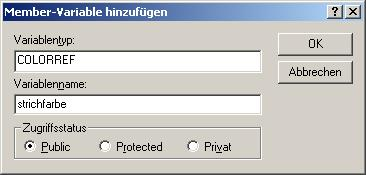
- Nun müssen die Variablen noch initialisiert werden. Dies macht man im Konstruktor der Klasse CZeichnerView. Wie man den findet steht im ersten Dokument für den Zeichner.
Der müsste dann ungefähr so aussehen:
CZeichnerView::CZeichnerView()
{
// ZU ERLEDIGEN: Hier Code zur Konstruktion einfügen,
startpunkt = CPoint(0,0);
endpunkt = CPoint(0,0);
strichdicke = 1;
// auf Schwarz setzen
strichfarbe = RGB(0,0,0);
}
- Nun muss die Farbe auch geändert werden können. Dazu verwendet man am Besten den schon vordefinierten Dialog CColorDialog.
Zuerst brauchen wir aber einen Button in der Symbolleiste für den Dialog.
Im Visual C++ auf der linken Seite von der Ansicht der Klassen auf die Ansicht der Ressourcen wechseln. Dann auf Toolbar doppelt klicken und auf IDR_MAINFRAME doppelt klicken. Es öffnet sich ein Fenster, in dem ein Symbol hinzugefügt werden kann.
Nun auf das letzte, leere Symbol klicken und etwas zeichnen.
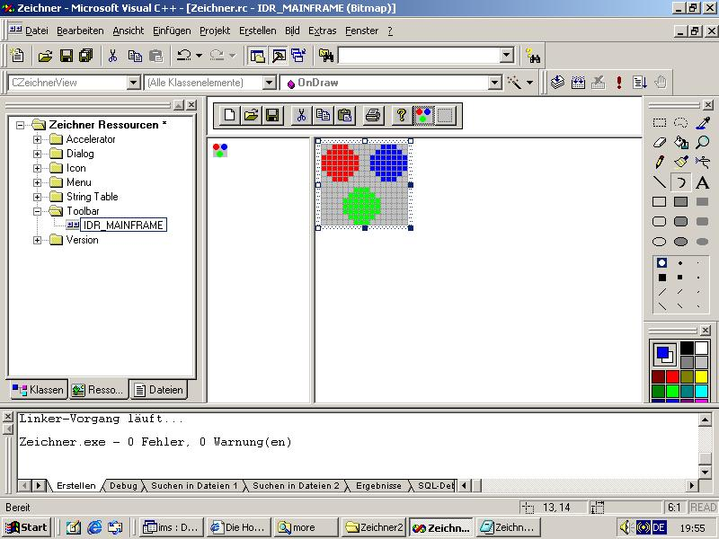
Nun wieder auf das letzte, nun nicht mehr leere Symbol doppelt klicken. -> es öffnet sich ein Dialogfeld, in dem man dem Button einen Namen geben kann.
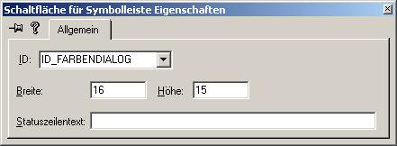
- Der Button braucht noch einen Handler, der aufgerufen wird, wenn der Button gedrückt wird.
Ansicht -> Klassen-Assistent
In der Drop-Down Liste : Klassenname muss CZeichnerView ausgewählt werden, weil der Handler in diese Klasse gehört, weil sich dort auch die Daten befinden, die mit ihm manipuliert werden sollen.
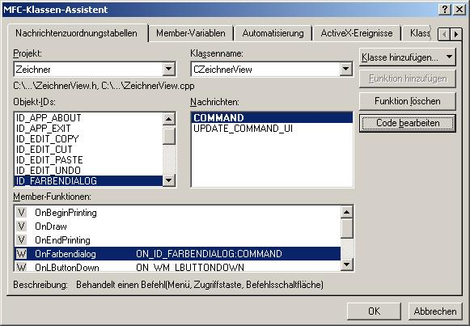
Funktion hinzufügen... -> OK -> Code bearbeiten...
-
Nun befindet man sich direkt beim Handler. Der sollte nun den Dialog aufrufen und wenn der Dialog mit OK bestätigt wird die aktuelle Farbe auf die ausgewählte ändern.
Der Handler sollte dann so aussehen:
void CZeichnerView::OnFarbendialog()
{
// TODO: Code für Befehlsbehandlungsroutine hier einfügen
CColorDialog dia;
// Dialog modal ausführen
if (dia.DoModal() == IDOK)
{
// Wenn OK gedrückt wurde aktuelle Farbe ändern
strichfarbe = dia.GetColor();
}
}
-
Jetzt muss die Farbe noch vor jedem Zeichnen eines Striches eingestellt werden. (Visual C++ weiß noch nichts von der Farbänderung)
Dazu muss der Funktion OnDraw der Klasse CZeichnerView noch ein bisschen Code hinzugefügt werden.
Die Funktion sollte dann so aussehen:
void CZeichnerView::OnDraw(CDC* pDC)
{
CZeichnerDoc* pDoc = GetDocument();
ASSERT_VALID(pDoc);
CPen *oldpen,*newpen;
// Neuen Zeichenstift anlegen
newpen = new CPen(PS_SOLID,strichdicke,strichfarbe);
// Neuen Stift einstellen, alten merken
oldpen = pDC->SelectObject(newpen);
// Verschiebe Grafikcursor zu Position startpunkt (ohne zu zeichnen)
pDC->MoveTo(startpunkt);
// Zeichne Linie zum endpunkt
pDC->LineTo(endpunkt);
// wieder alten Stift einstellen
pDC->SelectObject(oldpen);
// neuen Stift wieder löschen
delete newpen;
// ZU ERLEDIGEN: Hier Code zum Zeichnen der ursprünglichen Daten hinzufügen
}
- Nun funktionert das ändern der Farbe. (Kann schon ausprobiert werden :-) Jetzt brauche wir noch einen modalen Dialog für das ändern der Strichdicke. (den muss man jetzt selber machen)
->Dazu wieder auf die Ansicht der Ressourcen wechseln.
-> Dort auf Dialog doppelt klicken und dann mit rechten Maustaste auf Dialog klicken.
-> Auf Dialog einfügen klicken.
Es kommt nun ein leerer Dialog mit dem Namen IDD_DIALOG1 hinzu.
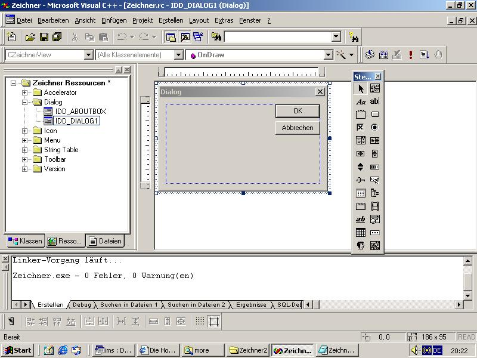
- -> Ein neues Steuerelement 'Text' einfügen
-> mit der rechten Maustaste darauf klicken, Eigenschaften anklicken
-> Einen anderen Titel eingeben
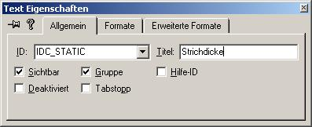
- -> Ein neues Steuerelement 'Eingabefeld' einfügen
-> mit der rechten Maustaste darauf klicken, Eigenschaften anklicken
-> Einen anderen Namen geben
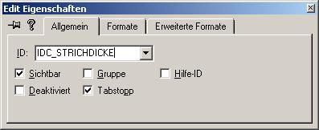
Nun sollte man dem Dialog noch einen anderen Namen geben:
-> mit der rechten Maustaste auf die Titelleiste des Dialogs klicken
-> Eigenschaften
-> Namen ändern
-> Titel ändern
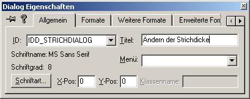
Der Dialog sollte in etwa so aussehen:
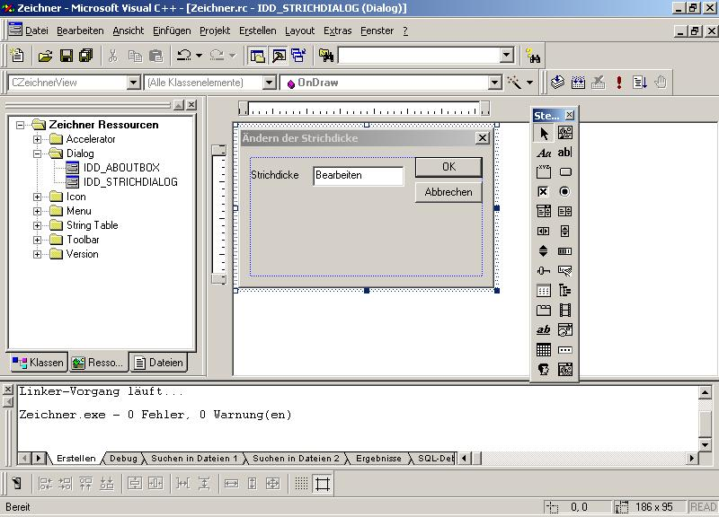
-
Nun braucht man noch eine Klasse für den Dialog.
-> Ansicht -> Klassen-Assistent...
-> es öffnet sich automatisch der folgende Dialog
-> einfach auf OK klicken
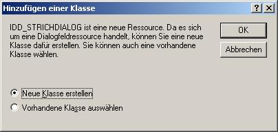
-
Die Klasse braucht noch einen Namen. Ich hab sie StrichKlasse genannt.
-> Name eingeben
-> auf OK klicken
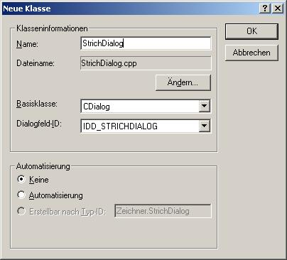
-> auf Member Variablen klicken
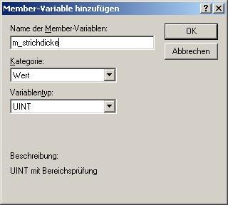
->Member Variable für das Eingabefeld (IDC_STRICHDICKE) hinzufügen
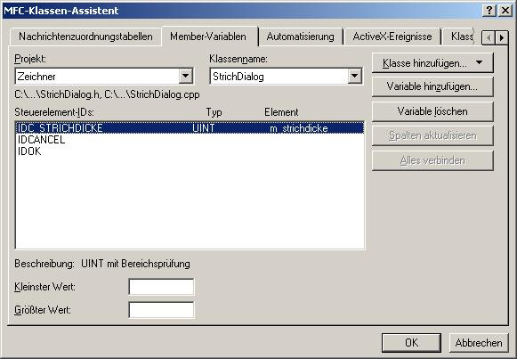
-> Den Klassen-Assistenten mit OK verlassen
- Es wird noch ein Button für diesen Dialog gebraucht.
-> Wieder auf die Ressourcenansicht wechseln
-> Toolbar -> IDR_MAINFRAME
-> neues Symbol zeichnen
-> Symbol neuen Namen geben z.B.: ID_STRICHDICKE
- Jetzt muss noch die Datei, in der sich die Klasse für den Dialog befindet in der Datei CZeichnerView.cpp ganz oben includiert werden:
// ZeichnerView.cpp : Implementierung der Klasse CZeichnerView
//
#include "stdafx.h"
#include "Zeichner.h"
#include "ZeichnerDoc.h"
#include "ZeichnerView.h"
#include "StrichDialog.h"
#ifdef _DEBUG
#define new DEBUG_NEW
#undef THIS_FILE
static char THIS_FILE[] = __FILE__;
#endif
- Ein Handler für den Button...
-> Ansicht -> Klassen-Assistent...
-> Klassenname muss CZeichnerView sein
-> Funktion hinzufügen
-> Code bearbeiten
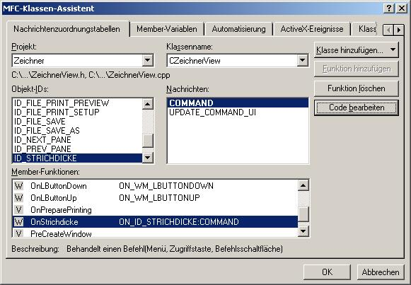
- Handler sollte so aussehen:
void CZeichnerView::OnStrichdicke()
{
// TODO: Code für Befehlsbehandlungsroutine hier einfügen
StrichDialog dia;
// Alten Wert anzeigen
dia.m_strichdicke = strichdicke;
// Dialog ausführen
if (dia.DoModal() == IDOK)
{
// Wenn OK gedrückt wurde neuen Wert benutzen
strichdicke = dia.m_strichdicke;
}
}
- Fertig